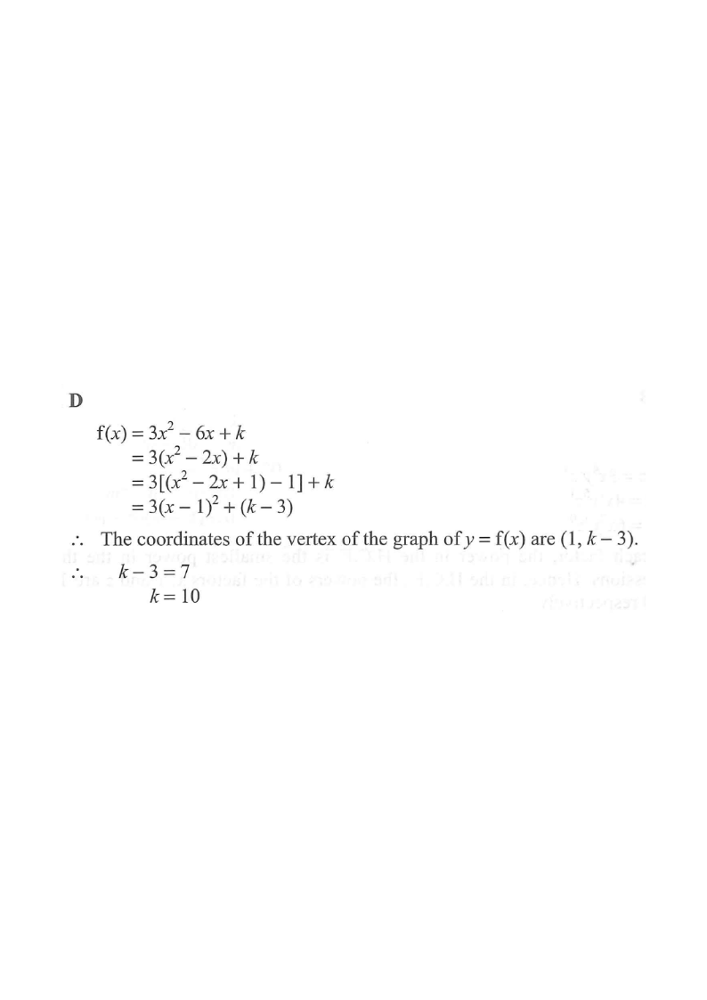

HKDSE 2014 · Paper 2 · Q35
Let $f(x)=3x^2-6x+k$, where $k$ is a constant.
If the $y$-coordinate of the vertex of the graph of $y=f(x)$ is $7$, then $k=$
A. $\;1$
B. $\;3$
C. $\;4$
D. $\;10$

Figure (original exam diagram)
Step 1 · Write down the given function
$$f(x)=3x^2-6x+k$$
Given info: a quadratic with leading coefficient $3>0$ (opens upward), and an unknown constant $k$ in the constant term.
Step 2 · Complete the square (factor out 3)
$$\begin{aligned}
f(x) &= 3x^2-6x+k \\[2pt]
&= 3\left(x^2-2x\right)+k
\end{aligned}$$
Take the coefficient $3$ out of the first two terms only — keep $k$ outside the bracket.
Step 3 · Form a perfect square
$$\begin{aligned}
f(x) &= 3\left[\left(x^2-2x+1\right)-1\right]+k \\[2pt]
&= 3\left[(x-1)^2-1\right]+k \\[2pt]
&= 3(x-1)^2-3+k \\[2pt]
&= 3(x-1)^2+(k-3)
\end{aligned}$$
Add and subtract $1$ inside the bracket (half of $-2$, squared), then expand so the constant is separated out.
Step 4 · Read off the vertex and solve for $k$
$$y=3(x-1)^2+(k-3)$$
So the graph has vertex $\;(1,\;k-3)$.
$$\begin{aligned}
k-3 &= 7 \\[2pt]
k &= 10
\end{aligned}$$
In the form $y=a(x-h)^2+c$, the vertex is $(h,c)$. Set the $y$-coordinate $k-3$ equal to the given value $7$.
Answer: D · $k=10$